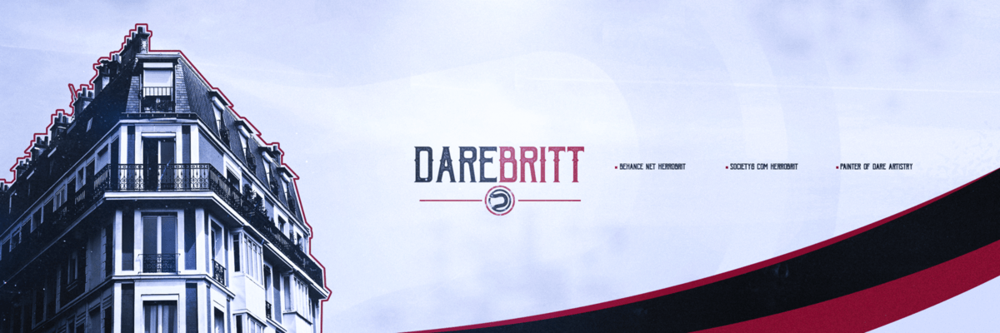

Bannière twitter pour Britt

Ce visuel représente une bannière Twitter faites pour un client avec un mélange de thème qui est le western démontrer par la typographie utiliser ainsi que la modernité qui est mise en œuvre par l’immeuble situé à gauche. La palette de couleur rouge, noir et blanc est présente pour faire ressortir la simplicité à travers cette création.